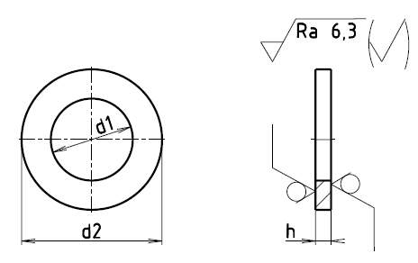

Příklad označení ocelové podložky s čistým povrchem pro šroub M12 s válcovou hlavou
PODLOŽKA ČSN 02 1703.11–13
| Pro šroub d | d1 | d2 | h | Hmotnost ocelové [g] |
|---|---|---|---|---|
| M1 | 1,1 | 2,5 | 0,3±0,1 | 0,009 |
| M1,2 | 1,3 | 3,0 | 0,3±0,1 | 0,014 |
| M1,4 | 1,5 | 3,0 | 0,3±0,1 | 0,011 |
| M1,6 | 1,7 | 3,5 | 0,3±0,1 | 0,017 |
| M2 | 2,2 | 4,5 | 0,5±0,1 | 0,048 |
| M2,5 | 2,7 | 5,0 | 0,5±0,1 | 0,055 |
| M3 | 3,2 | 6,0 | 0,5±0,1 | 0,079 |
| M3,5 | 3,7 | 7,0 | 0,5±0,1 | 0,109 |
| M4 | 4,3 | 8,0 | 0,8±0,1 | 0,224 |
| M5 | 5,3 | 9,5 | 1,0±0,1 | 0,383 |
| M6 | 6,4 | 11,0 | 1,2±0,2 | 0,592 |
| M8 | 8,4 | 14,0 | 1,6±0,2 | 1,240 |
| M10 | 10,5 | 18,0 | 2,0±0,2 | 2,640 |
| M12 | 13,0 | 20,0 | 2,5±0,2 | 3,560 |
| M14 | 15,0 | 24,0 | 2,5±0,2 | 5,410 |
| M16 | 17,0 | 27,0 | 3,0±0,2 | 8,140 |
| M18 | 19,0 | 30,0 | 3,0±0,2 | 9,970 |
| M20 | 21,0 | 33,0 | 3,0±0,2 | 12,000 |
1 První doplňková číslice z číslem ČSN 02 1702 označuje materiál podložky
1 ocel 11 423 nebo jiná ocel s obdobnými mechanickými vlastnostmi
2 Slitina Al-Cu-Mg 42 4201
3 měď 42 3001
4 bronz 42 3016
5 mosaz 42 3213
6 olovo
7 lesklá lepenka ČSN 50 3177.1
8 tvrzený papír ČSN 64 4111.2
9 podle zvláštního ujednání
2 První doplňková číslice za číslen ČSN 02 1721 označuje materiál podložky: 1 ocel 11 423.
3 Druhá doplňková číslice označuje úpravu povrchu podložky:
0 bez úpravy povrchu
2 černění
3 fosfátování
4 kadmiování
5 zinkování
6 niklování
7 mosazení
8 chromování
9 dle zvláštního ujednání